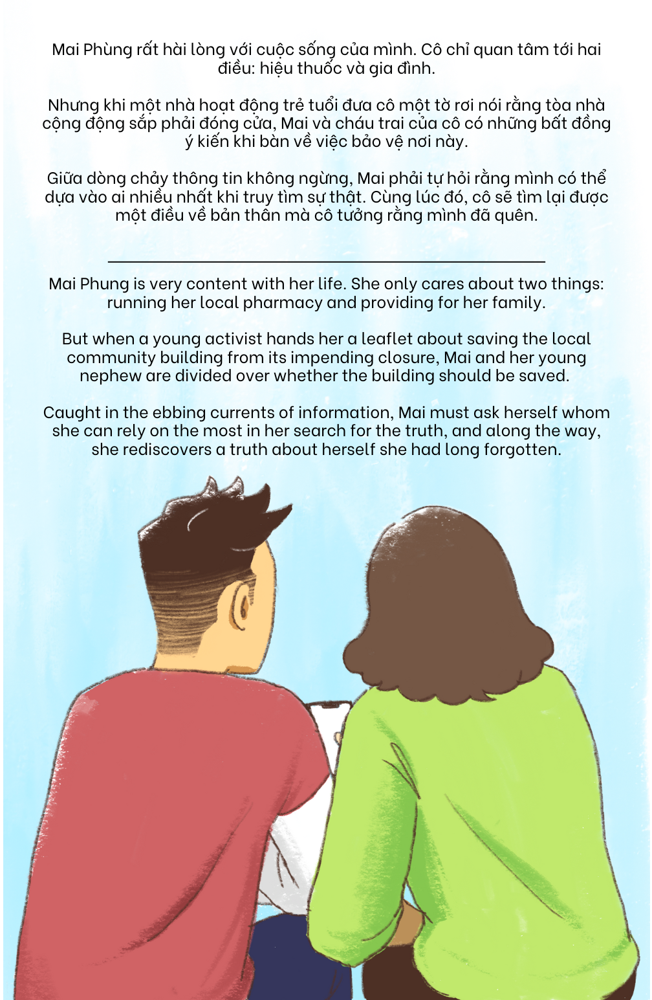

Cảm ơn // Thank you
Cảm ơn vì đã đọc tạp chí này!
Câu chuyện hư cấu này được dựa trên nghiên cứu khoa học cho dự án nghiên cứu “Gửi Tin Tức Về Nhà: Phân Tích Sự Lây Lan của Chứng Rối Loạn Thông Tin trong Cộng Đồng Người Việt Hải Ngoại trong Kỳ Bầu Cử Tổng Thống Mỹ 2020”. Đây là một nghiên cứu định tính đa phương pháp sử dụng dữ liệu từ Facebook trong khoảng thời gian có Kỳ Bầu Cử Tổng Thống Mỹ 2020 và từ thảo luận nhóm tập trung với người Mỹ gốc Việt trong năm 2021. Từ nghiên cứu này chúng tôi đã hiểu rõ hơn mạng lưới thông tin và truyền thông mà người Mỹ gốc Việt chia sẻ qua nhiều thế hệ.
Tất cả các nhân vật và hội thoại trong tạp chí này đều dựa trên kết quả nghiên cứu của chúng tôi, nhưng tất cả các tên, địa điểm, và sự kiện cụ đều không dựa trên sự thật.
Để biết thêm chi tiết về nghiên cứu này, xin đón đọc các bài báo học thuật được xuất bản tại CSCW 2023 và tạp chí Truyền Thông Chính Trị.
Tạp chí này được đến với quý vị nhờ vào sự tài trợ từ Viện Dữ Liệu, Dân Chủ, và Chính Trị tại Đại Học George Washington và Trung Tâm vì một Công Chúng Hiểu Biết tại Đại Học Washington. Lời cảm ơn đặc biệt tới sự hỗ trợ từ Việt Kiểm Tin, Người Thông Dịch, và cộng đồng người Mỹ gốc Việt vì đã sẵn sàng cộng tác và ủng hộ nghiên cứu mà câu chuyện này dựa trên.
Dòng Triều Đổi Thay CC-BY-SA-NC 2023
Xuất bản tại Seattle, WA
Thank you for reading this Zine!
This fictional story is based on empirical research conducted for the research project titled “Sending News Back Home: Analyzing the Spread of Information Disorder in the Vietnamese Diaspora during the 2020 US Presidential Election”. This is a multi-method qualitative research study that draws on Facebook data from around the 2020 U.S. Presidential Elections and focus group discussions with Vietnamese Americans in 2021. Through this research we came to better understand the information and communication networks that Vietnamese Americans share across generations.
All characters and dialog in this zine are based on findings from our research, but all names, places, and specific events are fictionalized.
For more details about this research, keep an eye out for scholarly articles published in CSCW 2023 and the journal of Political Communication.
This zine was brought to you with funding from the George Washington University’s Institute for Data, Democracy & Politics and University of Washington’s Center for an Informed Public. Special thanks to support from Viet Fact Check, The Interpreter, and the Vietnamese American community who has been open to collaboration and supportive of the research which this story is based on.
Changing Tides CC-BY-SA-NC 2023
Published in Seattle, WA
